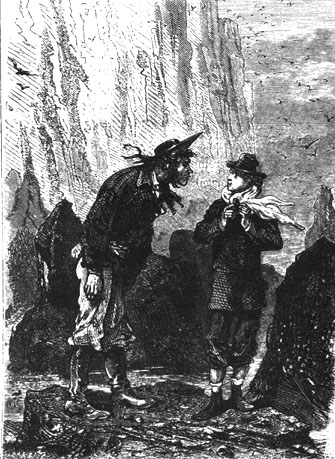
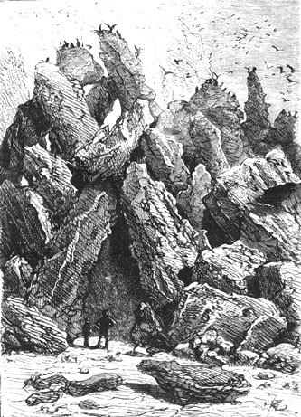
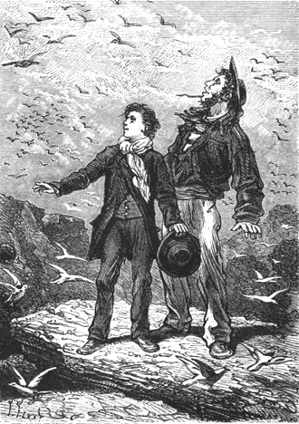

All at once the reporter told the sailor to wait for him in this very place where he would rejoin him, and without losing an instant he ascended the coast in the direction followed by the negro Neb several hours earlier. Then he rapidly disappeared behind a corner of the coast, so anxious was he for news about the engineer.
Herbert wanted to accompany him.
“Stay here, my boy,” the sailor said to him. “We have to prepare an encampment and to see if it is possible to find something more substantial for the appetite than shellfish. Our friends will need to recuperate on their return. Each to his task.”
“I am ready, Pencroff,” replied Herbert.
“Good!” replied the sailor. “That will do. Let us proceed methodically. We are tired, we are cold, we are hungry. Hence we must find shelter, fire and nourishment. The forest has wood, the nests have eggs; it remains to find a house.”
“Very well,” replied Herbert, “I will look for a cave among these rocks and I will surely discover some hole in which we can hide.”
“That’s that,” replied Pencroff. “Let’s go, my boy.”
And they both walked to the foot of the enormous wall on this beach that the receding tide had largely uncovered. But instead of going toward the north they went to the south. Several hundred feet from where they had landed, Pencroff noted that the coastline presented a narrow opening which, in his opinion, could be the mouth of a river or a brook. Now, on the one hand, it was important to establish themselves in the neighborhood of a potable watercourse, and on the other hand, it was not impossible that the current had thrown Cyrus Smith on this shore.
The high wall, as has been said, rose to a height of three hundred feet but the block was solid throughout, and even at its base, barely washed by the sea, it did not present the smallest fissure which could serve as a temporary dwelling. It was a perpendicular wall, made of a very hard granite which the waves had never eroded. Near the summit all kinds of sea birds fluttered about, in particular various web-footed species with long compressed pointed beaks—squalling, and hardly afraid of the presence of man who, for the first time no doubt, was thus disturbing their solitude. Among these web-footers Pencroff recognized several skua, a sort of sea gull which is sometimes called stercorarius and also the voracious little sea mews which nested in the crevices of the granite. A gunshot fired into this swarm of birds would have killed a great number; but to fire a gunshot, a gun was needed and neither Pencroff nor Herbert had one. Besides these sea mews and these skua are scarcely edible and even their eggs have a detestable taste.
Meanwhile Herbert, who had gone a little more to the left, soon noted several seaweed covered rocks which the high tide would cover again several hours later. On these rocks, amid slippery seaweed, bivalve shellfish abounded which hungry people could not disdain. Herbert called Pencroff, who quickly ran up.
“Ah! These are mussels!” shouted the sailor. “Here is something to replace the eggs that we don’t have!”
“These are not mussels!” replied young Herbert, who carefully examined the mollusks attached to the rocks, “they are lithodomes.”
“And are they edible?” asked Pencroff.

“And are they edible?” asked Pencroff.
“Perfectly so.”
“Then let us eat lithodomes.”
The sailor could rely on Herbert. The young boy was very strong in natural history and always had a veritable passion for this science. His father had encouraged him in this line by letting him attend the courses of the best Boston professors who were fond of this intelligent and industrious lad. Moreover, his instincts as a naturalist would afterwards be utilized more than once and on this outset they did not deceive him.
These lithodomes were oblong shells, tightly attached in clusters to the rocks. They belonged to that species of molluscous perforators which bore holes in the hardest stones. Their shell is rounded at both ends, a feature not to be found in the ordinary mussel.
Pencroff and Herbert made a good meal of these lithodomes which were then half opened to the sun. They ate them like oysters, and found them to have a strong peppery taste which consoled them for not having either pepper nor any other sort of condiment.
Their hunger was thus appeased for the moment, but not their thirst, which increased after their consumption of these naturally spiced mollusks. They would have to find fresh water and it was not likely that it would be lacking in a region so randomly capricious. Pencroff and Herbert filled their pockets and handkerchiefs with an ample supply of lithodomes. They then went back to the foot of the high land.
Two hundred feet further they arrived at this indentation in the coastline where, if Pencroff guessed correctly, a small river should be flowing. At this spot the wall appeared to have been separated by some violent subterranean action. At its base a cove was hollowed out, the far end forming a very sharp angle. The watercourse at that point measured one hundred feet in breadth, and its two banks on each side were barely twenty feet wide. The watercourse ran almost directly between the two walls of granite which were not as high upstream; then it turned abruptly and disappeared under some brushwood at a distance of half a mile.
“Here is water! There is wood!” said Pencroff. “Well now, Herbert, all we need is the house!”
The water of the river was clear. The sailor knew that at this moment of low tide the ocean had not reached here, and the water would be sweet. This important point established, Herbert looked for some cavity which would serve as a retreat but it was useless. Everywhere the wall was smooth, flat and perpendicular.
However, at the very mouth of the river, above the line of high tide, there had formed, not a grotto, but a pile of enormous fallen rocks, such as are often met with in granite countries and which are called “Chimneys.”

There had formed... a pile of enormous fallen rocks.
Pencroff and Herbert went rather far in among the rocks, in sandy passages where light was not wanting because it entered by openings among the granite rocks, some of which were supported only by a miracle of equilibrium. But with the light the wind also entered—really a corridor wind—and with the wind the sharp cold from the outside. However, the sailor thought that by obstructing certain portions of these passages, by closing some openings with a mixture of stones and sand, they could make the “Chimneys” habitable. The geometrical design of the “Chimneys” resembled the typographical sign & which signifies et cetera abbreviated. Now, by isolating the upper loop of the sign, through which the wind blew from the south and from the west, they would doubtless succeed in putting the lower part to use.
“Here’s our work,” said Pencroff, “and if we ever see Mr. Smith again he will know what to make of this labyrinth.”
“We will see him again, Pencroff,” cried Herbert, “and when he returns he must find a halfway decent dwelling here. It will be so if we can build a fireplace in the left passage and keep an opening for the smoke.”
“We can do it, my boy,” replied the sailor, “and these chimneys”—that was the name that Pencroff kept for this temporary home—“will serve us. But first let us get a stock of fuel. I imagine that the wood will not be useless in stopping up these holes through which the very devil himself is blowing his trumpet.”
Herbert and Pencroff left the Chimneys and turning a corner, they began to ascend the left bank of the river. The current was rather rapid and carried some dead wood. The rising tide—and it could already be felt at this time—must drive it back with force to a rather considerable distance. It occurred to the sailor that they could use this ebb and flow to transport heavy objects.
After walking for a quarter of an hour the sailor and the young boy reached the sharp bend which the river made in turning to the left. From this point its course passed through a forest of magnificent trees. These trees had kept their verdure in spite of the advanced season because they belonged to the family of conifers which grow in all regions of the globe, from the frigid climates to the tro../pics. The young naturalist recognized especially the “deodars,” a species very numerous in the Himalayan zone, which emit an agreeable odor. Among these fine trees grew clusters of fir trees whose opaque parasol boughs spread wide around. In the midst of the tall grass, Pencroff felt his feet crushing dry branches which crackled like fireworks.
“Good, my boy,” he said to Herbert, “if the name of these trees escapes me, I know at least to classify them in the category of ‘firewood’ and, for the moment it is the only category that we need!”
“Let us get some,” replied Herbert, who got to work at once.
The collection was easy. It was not even necessary to break the branches off the trees because enormous quantities of dead wood were lying at their feet. But if the fuel was not wanting, the means of transportation left something to be desired. This wood, being very dry, would burn rapidly. It would therefore be necessary to carry a considerable quantity to the Chimneys and the load of two men would not suffice. Herbert noted this.
“Well my boy,” replied the sailor, “there must be some way of moving this wood. There is always a way to do everything! If we had a cart or a boat it would be quite easy.”
“But we have the river!” said Herbert.
“Right” replied Pencroff. “The river will be for us a road which moves itself and rafts were not invented for nothing.”
“Only” observed Herbert, “at the moment our road is going the wrong way since the tide is rising.”
“We will wait till it ebbs,” replied the sailor, “and then it will be responsible for transporting our fuel to the Chimneys. Anyhow, let us prepare our raft.”
The sailor, followed by Herbert, went towards the bend that the edge of the forest made with the river. In proportion to his strength, each carried a load of wood tied in faggots. On the river’s bank a large quantity of dead branches was also found among grass where the foot of man had probably never trod. Pencroff began at once to put his raft together.
In a sort of eddy produced at one point of the bank, which broke the current, the sailor and the young boy placed some rather large pieces of wood which they had attached together with dried vines. It thus formed a sort of raft on which they successively piled up all the collection of wood, a load for at least twenty men. In an hour the work was finished and the raft, moored to the bank, waited for the change in tide.
They had several hours to kill and by common agreement Pencroff and Herbert resolved to climb to the upper plateau in order to examine the country for a more extended radius.
Two hundred feet beyond the bend formed by the river the wall, terminated by a pile of rocks, sloped away gently to the border of the forest. It was like a natural staircase. Herbert and the sailor began their climb. Thanks to the strength of their knees they reached the crest in a few moments and they positioned themselves at the corner above the mouth of the river.
On arriving their first glance was toward this ocean that they had crossed under such terrible conditions! They observed with emotion all of the coastline to the north where the catastrophe had occurred. It was there that Cyrus Smith had disappeared. They searched to see if some wreckage of their balloon, which a man could hang onto, was still floating. Nothing! The sea was a vast desert of water. As to the coast it too was deserted. Neither the reporter nor Neb could be seen there but it was possible that at this moment they were too far away.
“Something tells me,” cried Herbert, “that a man as energetic as Mr. Cyrus would not allow himself to drown like a new born babe. He must have reached some point on the shore. Isn’t it so, Pencroff?”
The sailor sadly shook his head. He hardly expected to see Cyrus Smith again, but he wanted to give Herbert something to hope for.
“Without doubt, without doubt,” he said, “our engineer is a man able to get out of a situation where all others would succumb!...”
However he observed the coast very carefully. Beneath them was the sandy shore bounded to the right of the river’s mouth by a line of breakers. These rocks, still emerged, resembled groups of amphibians lying in the surf. Beyond the strip of reefs the sea sparkled under the rays of the sun. In the south, a sharp point hid the horizon and one could not say if the land was extended in this direction, or if it oriented itself from southeast to southwest which would have made this coast a sort of elongated peninsula. Up to the extreme north of the bay the outline of the shore followed a more rounded contour. There the shore was low, flat, without cliffs, and with large sandy beaches which the ebbing tide had uncovered.
Pencroff and Herbert then turned to the west. First they saw a mountain topped by snow which rose at the distance of six or seven miles. Vast woods extended from the foothills of this mountain to within two miles of the coast enhanced by large green patches due to the presence of evergreens. Then, from the edge of this forest to the coast itself groups of trees were scattered randomly over a broad plateau. On the left they saw the waters of a small river sparkle trough several glades. It seemed that the river’s rather sinuous course led it back toward its source near the spurs of the mountain. At the spot where the sailor had left his raft of wood the watercourse began to flow between the two high granite walls. If, on the left bank, the wall remained sharp and abrupt, on the right bank, on the contrary, it sank little by little, the blocks changing to isolated rocks, the rocks to stones, the stones to pebbles up to the extremity of the point.
“Are we on an island?” murmured the sailor.
“In any case it seems to be rather vast!” replied the young lad.
“An island, however vast, will never be anything but an island!” said Pencroff.
But this important question could not yet be resolved. The answer would have to wait for another time. As to the land itself, island or continent, it seemed to be fertile, with a pleasant appearance and with a varied output.
“That is fortunate,” Pencroff noted, “and in our misfortune we should give thanks to Providence.”
“God be praised!” responded Herbert, whose pious heart was full of gratitude to the Author of all things.
For a long while Pencroff and Herbert examined this country on which destiny had thrown them but it was difficult to guess from this quick inspection what the future had in store for them.
Then they returned following the southern crest of the granite plateau, bordered by capricious rocks with bizarre shapes. Several hundred birds lived there nested in holes of the stone. Herbert, hopping over the rocks, made a large flock of these winged creatures fly away.
“Ah,” he cried, “These are neither sea gulls nor sea mews!”
“Then what are these birds?” asked Pencroff. “Upon my word, one would say pigeons.”

“Then what are these birds?...”
“Quite so, but these are wild pigeons or rock pigeons,” replied Herbert. “I recognize them by the double black band on their wing, by their white rump, and their ashen blue plumage. Now, if the rock pigeon is good to eat their eggs must be excellent if there are still some in their nests!...”
“We will not give them time to hatch if it isn’t in the shape of an omelette!” replied Pencroff gleefully.
“But in what will you make your omelette?” asked Herbert, “In your hat?”
“Well,” replied the sailor, “I am not enough of a wizard for that. We are forced to use eggs in the shell, my boy, and I will be in charge of disposing of the hardest of them.”
Pencroff and the young lad carefully examined the crevices in the granite and they did in fact find eggs in some of the cavities. Several dozens were collected, then placed in the sailor’s handkerchief and since it was almost high tide they began to descend to the watercourse.
When they arrived at the bend in the river it was one o’clock in the afternoon. The current had already reversed itself. It was necessary therefore to profit from the ebb to bring the raft of wood to the river’s mouth. Pencroff had no intention of letting the raft float in the current at random nor did he intend to board it in order to steer it. But a sailor is never at a loss when it is a question of cables or ropes, and Pencroff quickly braided a long rope several fathoms long by means of dried vines. This vegetable cable was attached to the back of the raft. The sailor wiggled his hand while Herbert pushed the raft back with a long pole, keeping it in the current.
The procedure succeeded as hoped. The large load of wood, which the sailor held on to while walking on the bank, followed the current. The bank was even and there was no reason to fear that the raft would run aground. Before two o’clock they arrived at the mouth of the river several paces from the Chimneys.